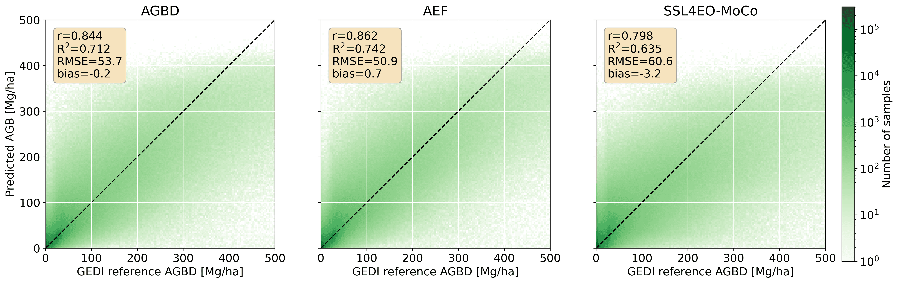
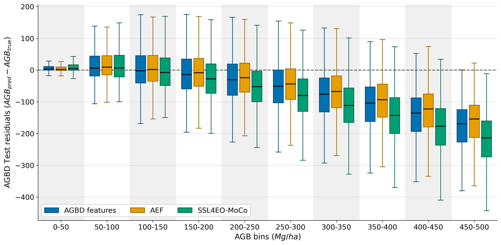
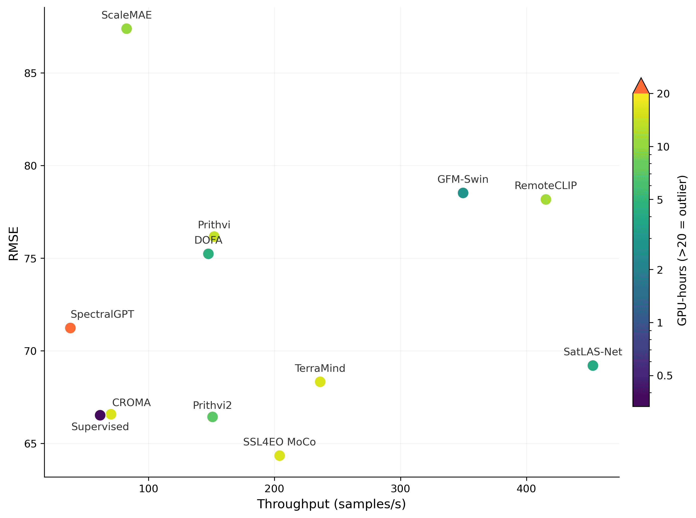
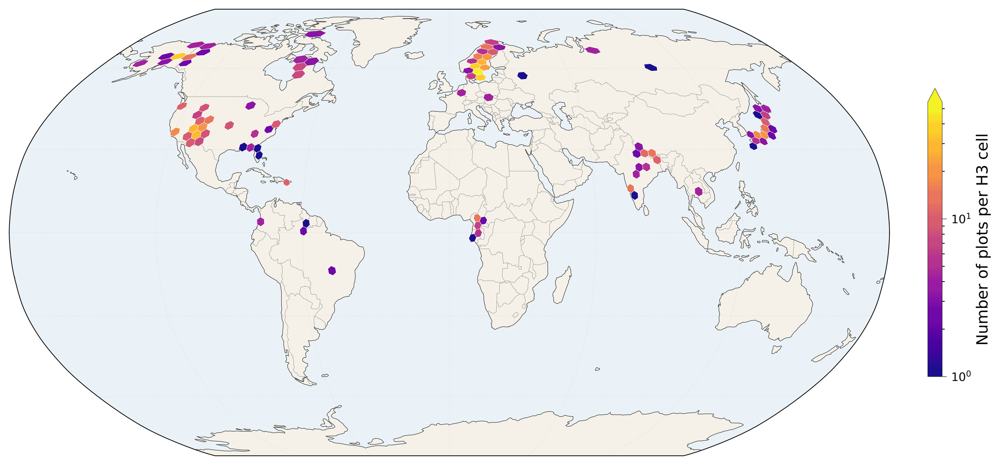
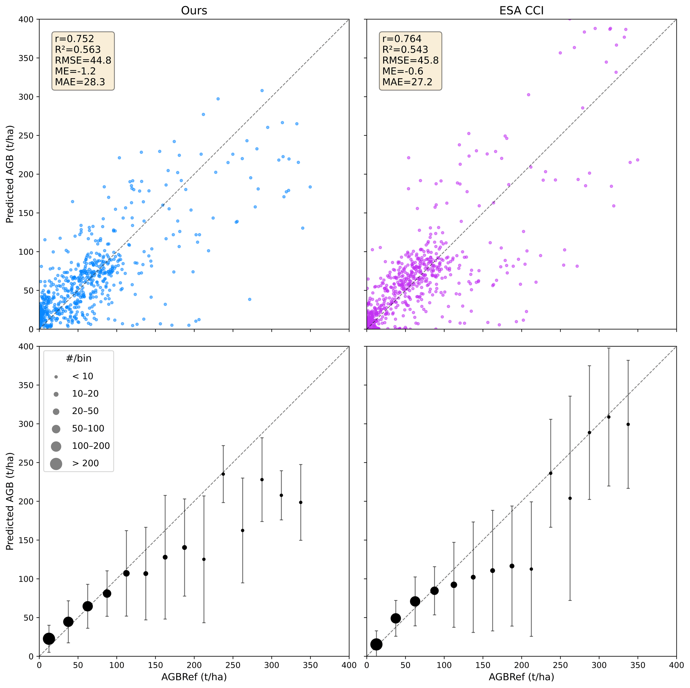

Accurate estimation of Above-Ground Biomass (AGB) from satellite imagery is essential for wide-area monitoring of carbon stocks, yet it remains a challenging regression task at global scale. Geospatial Foundation Models (GFMs) have recently emerged as a promising machine learning paradigm to derive general-purpose representations from Earth observation data, but their utility for quantitative regression tasks like biomass estimation remains largely unexplored, as most benchmarks emphasize classification and segmentation. Here, we present a comprehensive benchmark of GFMs for global-scale AGB estimation using the AGBD dataset. We distinguish two ways in which GFMs reach practitioners: models distributed as weights to be run by the user, which we evaluate as frozen encoders within the PANGAEA framework, and models distributed as ready-to-use pre-computed embedding products, for which we evaluate AlphaEarth Foundations (AEF) and TESSERA. We compare 11 GFMs and both embedding products against a fully supervised state-of-the-art (SOTA) model, and assess geographical and temporal generalization as well as agreement with the ESA CCI biomass product on independent reference data. Our results show that this distinction, rather than the frozen-versus-fine-tuned axis, is what matters: GFMs run as frozen encoders substantially underperform the supervised SOTA model, whereas pre-computed embedding products prove highly effective. An MLP trained on AEF embeddings outperforms the supervised SOTA model trained on AGBD features, and the same SOTA model trained on AEF embeddings achieves the best overall result, while also generalizing better across space and time.
Every GFM evaluated as a frozen encoder in PANGAEA lags behind the fully supervised baseline. The best, SSL4EO-MoCo (60.56 Mg/ha), is beaten even by a simple MLP on AEF embeddings.
fcn_film on AEF+ gives the best result (50.79 Mg/ha),
and even an MLP on AEF (52.22) beats the supervised model on raw AGBD features (53.73).
Trained on just 11 regions, our AEF model reaches near-parity with the globally-calibrated ESA CCI product on independent AGBRef data, with stronger spatial and temporal generalization.
Test RMSE on the full AGBD dataset. All models are trained end-to-end on the full dataset, except the GFM,
for which only the decoder head is trained. Pre-computed embeddings are the most informative input:
training the supervised fcn_film model on AEF instead of raw AGBD features lowers error from
53.73 to 50.92 Mg/ha, and augmenting AEF with a few ancillary layers (AEF+) is best overall.
| Model | Features | RMSE (↓) |
|---|---|---|
| Baseline (fully supervised) | ||
fcn_film | AGBD | 53.73 ± 0.02 |
fcn_film | S2 only | 58.57 ± 0.03 |
| Embeddings | ||
| Linear Probe | AEF | 60.46 ± 0.17 |
| MLP | AEF | 52.22 ± 0.02 |
fcn_film | AEF | 50.92 ± 0.02 |
fcn_film | AEF+ | 50.79 ± 0.01 |
| GFM (best) | ||
| SSL4EO-MoCo | S2 only | 60.56 |
Table 1. Test RMSE (Mg/ha, ↓) on the full dataset. Mean ± std over 3 runs (except GFM). Best in bold, second best underlined.

Figure 1. Density scatter of predicted vs. GEDI reference AGB for fcn_film trained on
AGBD features (left) and AEF embeddings (right). AEF improves the correlation (r: 0.844→0.862, R²: 0.712→0.742).

Figure 2. Test residuals (AGBpred − AGBtrue) by reference AGB bin. Both models underestimate high biomass (saturation), but AEF (orange) reduces the magnitude across almost all bins.
All 11 Sentinel-2-compatible GFMs in PANGAEA, evaluated with frozen encoders and a trained UPerNet decoder on AGBD Lite. Even the strongest GFM stays well above the embedding-based models in the table above, underscoring that off-the-shelf frozen features are not yet competitive for this regression task.
| Model | Lite RMSE (↓) |
|---|---|
| SSL4EO-MoCo | 64.34 |
| Prithvi-2 | 66.43 |
| CROMA | 66.57 |
| SatlasNet | 69.20 |
| SpectralGPT | 71.23 |
| TerraMind | 74.50 |
| DOFA | 75.24 |
| RemoteCLIP | 78.17 |
| Prithvi | 78.25 |
| GFM-Swin | 78.52 |
| ScaleMAE | 87.39 |
Table 2. AGBD Lite test RMSE (Mg/ha, ↓), Sentinel-2 only, sorted by RMSE. Best in bold, second best underlined.

Figure 3. Accuracy/efficiency trade-off: AGBD Lite RMSE vs. inference throughput, colored by GPU-hours needed to fine-tune. The fully supervised model matches or beats every GFM at a fraction of the compute.
AEF embeddings do not just improve average accuracy — they generalize better. Under cross-region zero-shot transfer, AEF+ cuts RMSE by 17–25% in Africa and South America. Where the plain AEF encoder fails on out-of-distribution South Asia, AEF+ (which keeps a few raw features) recovers robustness.
| Region | Features | cross-region | within-region | general |
|---|---|---|---|---|
| Africa | AGBD | 40.79 | 31.42 | 31.47 |
| AEF | 35.08 | 29.17 | 29.21 | |
| AEF+ | 33.72 | 29.13 | 29.24 | |
| South Asia | AGBD | 79.28 | 77.17 | 73.65 |
| AEF | 99.34 | 69.44 | 69.75 | |
| AEF+ | 80.85 | 69.50 | 70.49 | |
| South America | AGBD | 42.40 | 28.85 | 27.77 |
| AEF | 32.05 | 25.62 | 25.61 | |
| AEF+ | 32.02 | 25.56 | 25.62 |
Table 3. Geographical generalization, test RMSE (Mg/ha, ↓). cross-region: trained without the target region; within-region: trained only on it; general: trained on all regions. Best bold, second underlined.
| Features | all years | cross-year | within-year |
|---|---|---|---|
| AGBD | 53.29 | 59.12 | 52.20 |
| AEF | 50.64 | 52.23 | 51.05 |
| AEF+ | 50.52 | 52.52 | 50.92 |
Table 4. Temporal generalization, test RMSE (Mg/ha, ↓) on 2020 data. AEF/AEF+ trained on 2019 alone (cross-year) still beat AGBD trained on both years.
Evaluated against the independent AGBRef reference dataset (aggregated to 10 km), our fcn_film × AEF
model reaches near-parity with the globally-calibrated ESA CCI biomass product — despite being trained on
only the 11 AGBD regions. In the like-for-like Subset comparison the two are essentially tied on
R² and RMSE, while our model shows lower bias.
| Plots | Model | R² | r | RMSE | MAE | ME |
|---|---|---|---|---|---|---|
| All | fcn_film × AEF | 0.563 | 0.754 | 44.74 | 28.26 | −0.59 |
| ESA CCI | 0.543 | 0.763 | 45.80 | 26.77 | −3.09 | |
| Subset | fcn_film × AEF | 0.689 | 0.835 | 34.71 | 24.34 | 4.95 |
| ESA CCI | 0.687 | 0.858 | 34.82 | 21.86 | 1.94 |
Table 5. Our AGB predictions vs. ESA CCI, evaluated against AGBRef. All: all plots except Japan; Subset: plots within 1500 km of an AGBD region. Best per column in bold.

Figure 4. Spatial distribution of the independent AGBRef reference plots used for this evaluation (H3 hexagonal grid).

Figure 5. Predicted vs. AGBRef reference AGB for our fcn_film × AEF model (left) and ESA CCI (right).
Top: per-plot scatter; bottom: binned means with spread. Both saturate at high biomass, tracking the 1:1 line closely below ~150 t/ha.
If you find our work helpful, consider citing our paper 🙂
@article{Sialelli2026GFMAGB,
title = {Above-ground Biomass Estimation with Geospatial Foundation Models},
author = {Sialelli, Ghjulia and Scheibenreif, Linus and Wegner, Jan Dirk and Schindler, Konrad},
journal = {Remote Sensing of Environment (under review)},
year = {2026}
}